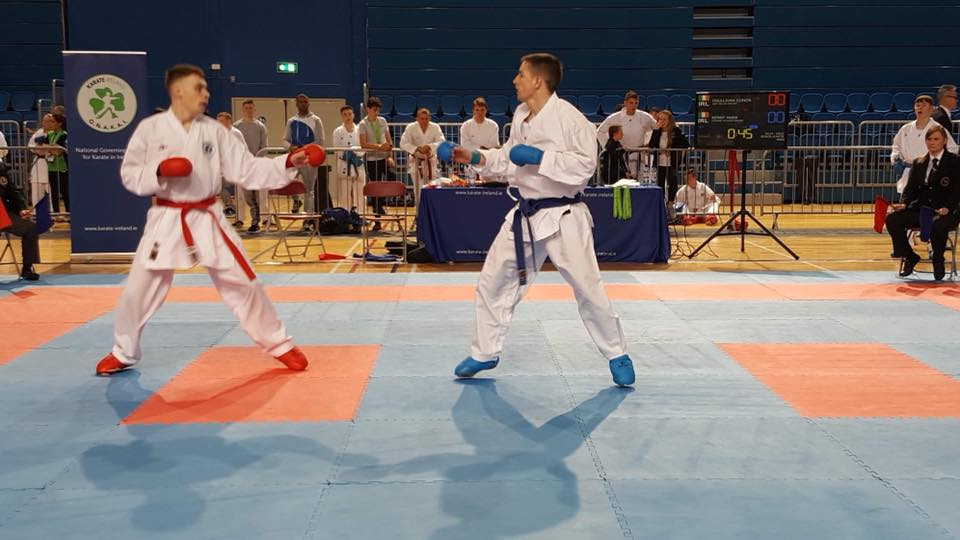
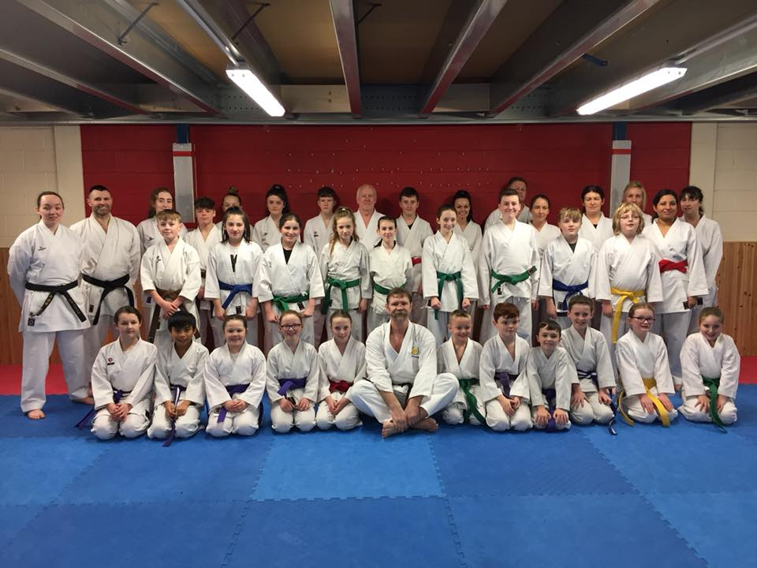

Welcome to Strabane Shotokan Karate Club. Whether you are a beginner, an experienced Karateka or Parent of a Student, we are a Club catering to all levels and abilities with a long history of delivering high level karate. Formed in 1974, Strabane Shotokan Karate Club has developed local people young and old in the art of Shotokan Karate. Under the Instruction of Sensei Simon O’Dowd (5thDan), the Club continues this tradition developing excellence both in competition and traditional karate with a focus on the values of Respect, Courtesy and Self-Discipline not only for the Dojo but for life. As well as receiving expert tuition from some of the best instructors in the Country, throughout the year we also bring some of the Best Karateka in the World to our town and Dojo, all in the aim of developing our Students.
We have classes for everyone from Age 4 and up with classes available Monday through to Friday each week. Chief Instructor Sensei Simon and the Strabane Shotokan Team, welcome you to train with us and if you have any questions or queries why not contact us to discuss.
Osu



Karate begins and ends with Respect. Respect for Sensei, The Dojo, Others and most importantly oneself. Through the Dojo Kun (Dojo Rules), the principle Values of Karate are set for each Karateka to follow not just in the Dojo but in life.
In addition strive to be the best and as such seek at all times to ENDEVOUR, LEARN and ACHIEVE.

Juniors
P3 to P7
Monday 6:30pm to 7:30pm
Wednesday 6:30pm to 7:30pm
Seniors
First Year to Adult
Monday 6:30pm to 7:30pm
Wednesday 6:30pm to 7:30pm
Little Tigers
Age 4 to P2
Tuesday 6pm to 7pm
Thursday 6:30pm to 7:30pm
Parent & Child
Together Classes
Tuesday 6:30pm to
7:30pm
Beginner Classes
Ages 8 to Adult
Thursday 6:30pm to
7:30pm
Learning to Compete Classes
All Ages
Monday 7:30pm to 8:15pm
Wednesday 7:30pm to 8:15pm
A Typical Training Session
Our dojo in Strabane, is a private training hall without peripheral noise or distraction which facilitates learning to the highest level. A typical Karate class will consist of some of the following aspects of Shotokan Karate:
Warm Up
Every class will begin with a series of exercises to get the blood pumping and warm up the muscles, with stretches to increase flexibility and ease of movement, helping to prevent injury and cramp during the class. Students work at their own level under the instruction of the Sensei.
Kihon (Basics)
No matter your grade, it is important to practice and master the fundamental basics of karate and perfect them in order to form a solid foundation for more advanced and fluid karate. Kihon can be practiced in traditional style, with rows of students performing the same moves together (or increasingly complex sequences according to the grade of the students) under instruction from the Sensei. The aim is to focus on correct form and muscle control, so that the same moves can be performed with speed and precision at a higher level.
Kata (Set Forms)
A Kata is a set sequence of Karate techniques and movement – punches, strikes, kicks and blocks – against multiple imaginary opponents, intended to perfect karate techniques at your grade level as well as demonstrate the correct martial attitude. A Kata performed well is inspiring and uplifting to watch.
Kumite (Fighting/Sparring)
Working with a partner to train, practice and hone the skills learned in Kihon and Kata. Kumite work will be physical but is completed in a light contact manner limiting injury.

Shotokan Karate is one of the original forms of Karate developed in secret on the Japanese island of Okinawa, and disclosed by Master Gichin Funakoshi in 1921. In 1922 he moved to mainland Japan and promoted his art and philosophy of Karate-do (the way of the empty hand) to universities and through public demonstrations there.
Master Funakoshi was elected honorary Head of the Japan Karate Association (JKA) in 1949. Many of his students continued to teach Karate after his death in 1957, but various disagreements regarding the appropriateness of competitive Karate to the philosophy behind the art led to a split into different styles (Shotokai, Gojo-ryu, Wado-ryu, Kyokushin-kai, Shugo-kai, Shito-ryu and others) though they are all influenced by Funakoshi. The word ‘Shotokan’, meaning ‘billowing pine trees’ (shoto) and ‘hall’ (kan) was the name of Master Funakoshi’s Central Dojo: the first independent Karate dojo in the world (1939) and not originally intended as the name of the style. Funakoshi simply called his martial art ‘Karate’ (kara, ‘empty’ and te, ‘hand’) as practitioners (karateka) are unarmed. Shotokan Karate is regarded as a strong, traditional and influential style.
In 1965 the JKA sent its most skilful and renowned instructors, Senseis Keinosuke Enoeda, Hirokazu Kanazawa, Hiroshi Shirai and Taiji Kase to Europe to promote Shotokan Karate. In 1966, Sensei Kanazawa was invited to Britain and the Karate Union of Great Britain (KUGB) was formed with Kanazawa as Chief Instructor.
Two years later Sensei Enoedaer, Sensei Kanazawa moved to Germany and Sensei Enoeda replaced him as Chief Instructor of the KUGB (then still part of the JKA) until he died in 2003.

| 1st Kyu | Brown/2 White Stripes |
| 2nd Kyu | Brown/White Stripe |
| 3rd Kyu | Brown |
| 4th Kyu | Purple/White Stripe |
| 5th Kyu | Purple |
| 6th Kyu | Green |
| 7th Kyu | Yellow |
| 8th Kyu | Red |
| 9th Kyu | Orange |
| 10th Kyu | White |
| Dan Grades (1st to 9th) | Black |
A full list of Dojo Rules can be seen on our notice board. However the following is a brief summary.Don’t worry if your child does not pick them up quickly and please do not be too hard on the young children. They will soon learn the rules through the class. We want them to have fun and enjoy karate but through training begin to understand the discipline and focus required.
New comers to the club may wear a Traditional White Karate Gi (Uniform), or loose comfortable clothing such as sweat pants and a thick t-shirt. For Beginners, we advise trying classes and be sure Karate is for you before purchasing a Gi. However after 3 to 4 weeks we expect all students to come in a Traditional White Karate Gi. These are available to purchase from the club. Please ask an Instructor for details.
Current Members are expected to wear a Karate Gi at all classes with the exception of competition Kumite classes.
| Japanese | Translation |
|---|---|
| ashi | leg or foot |
| ashikubi | Ankle (lit. ‘foot neck’) |
| Chudan | Middle Body |

Contact us and we'll get back to you within 24 hours.
Mopack Business Park, Ballycolman Road, Strabane, BT82 9PH
Simon O’Dowd (Club Chairperson): 0778-7524-232
Rory McFadden (Club Secretary): 0785-6414-177
Mark McAneny (Club Development Officer): 0790-9030-123
Declan Houston (Child Protection Officer): 0780-3012-103
sales@budosport.co.uk or mcanenymark@gmail.com